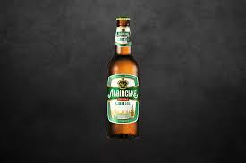
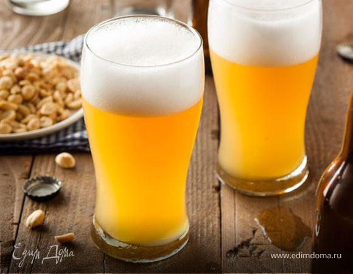

СТО: капиталовложения в бизнес «с нуля»
Чтобы основать СТО с нуля, прежде всего, следует заняться юридическим оформлением субъекта предпринимательской деятельности: в большинстве случаев достаточно оформить ЧП, что обойдется в 1500 гривен в Киеве (за 10-15 дней
Следующий этап – получение разрешительной документации. Подготовка всей необходимой документации для прохождения сертификационного аудита специализированной юридической фирмой будет стоить от 900 гривен (срок – одна неделя). Эта сумма не включает расходы на проведение экспертизы оборудования, проверку технической документации и, как следствие, сертификацию СТО. Ведь выездными проверками занимаются исключительно органы, уполномоченные выполнять работы в государственной Системе сертификации УкрСЕПРО (более 100 отделений на территории Украины). Эти службы, помимо требований к технической составляющей бизнеса, проверяют весь инженерно-технический персонал автосервиса на соответствующий уровень их квалификации (как минимум – профильное среднетехническое образование).
И самая важная составляющая успешного стартапа автосервисного бизнеса – серьезное техническое оснащение, к которому, в первую очередь, относятся:
- стенд для диагностики авто – 80 тысяч гривен;
- подъемник + его установка – 25 тысяч гривен;
- стенд правки аварийных кузовов – 48 тысяч гривен.
Конечно, на первоначальном этапе развития бизнеса вместо диагностического стенда можно использовать компьютерную диагностику, но доверия со стороны клиентов такой сервис не вызывает. Прежде чем предоставлять широкий спектр услуг, специалисты рекомендуют на начальных этапах развития бизнеса специализироваться на определенных услугах: шиномонтаж, жестяные работы, тонировка стекол, тюнинг авто. Для небольшой СТО, еще не завоевавшей репутацию на рынке, на первых этапах ее деятельности нерентабельными будут работы, связанные с капитальным ремонтом двигателей. Для стартапа бизнеса вам понадобится, как минимум, два автослесаря и автоэлектрик-диагност (их средняя заработная плата: 8 тысяч гривен в месяц). В последующем, возможно привлечение ходовика, моториста, механика по обслуживанию ГБО и прочих, более узких специалистов.
Покупка действующей СТО
Если хотите минимизировать риск банкротства – покупайте уже действующее комплексное СТО (бизнес со стажем работы в 2-3 года, как правило, хорошо налажен и имеет стабильную клиентуру). Например, в Киеве комплексную СТО на 4 бокса можно приобрести за 800 тысяч гривен (в зависимости от места расположения, площади, наличия техники, стоимость колеблется от 600 тыс. грн. до 2 млн. грн.).
Под комплексной СТO, имеется в виду, предоставления следующего спектра услуг:- проведение технического обслуживания;
- комплексная диагностика: двигатель и электронная система;
- выполнение регулировки развала-схождения;
- подбор цвета и покраска авто
- балансировка и шиномонтаж;
- автомойка, химчистка салона;
- продажа сопутствующих материалов (машинные масла, шины, ходовые запчасти и прочее).
Косметический ремонт б/у авто с их последующей перепродажей
Покупка Chevrolet Lacetti 2005 года выпуска обойдется примерно в 130 тысяч гривен. Можно приобрести машину после ДТП, что снизит ее стоимость до 80 тысяч гривен, но если самостоятельно не можете оценить серьезность поломки – лучше не рисковать.
После покупки занимаемся косметическим ремонтом:
- красим кузов новой краской (от 600 грн. за краску, при самостоятельной работе либо от 7 тыс. грн. за покраску в автосалоне);
- обновляем салон (от 700 грн. за кожзаменитель, при самостоятельной работе либо от 3 тыс. грн. за перетяжку сидений кожзамом в автосалоне);
- тонируем стекла (300 грн. за тонировочную пленку, при самостоятельной работе либо от 800 грн. за тонировку стекол в автосалоне);
- устанавливаем спойлер (400 грн. за спойлер на багажник);
- наклеиваем спортивные наклейки на кузов (от 300 грн.)
- устанавливаем акустику (от 200 грн.).
Прочитав это ты понимаешь что ты ебал это всё,закрываешь этот сай и переходишь к досугу
Лучше пива нет ничего!!!:)
Пиво бывает:
- Светлое
 -
Темное

-
Нефильтрованное
